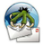
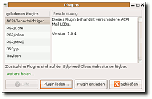
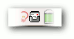
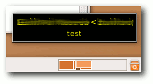
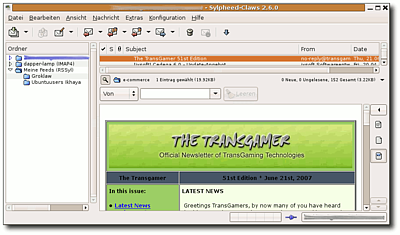
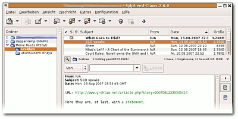

Plugins
Ausbaufähige Anleitung
Dieser Anleitung fehlen noch einige Informationen. Wenn Du etwas verbessern kannst, dann editiere den Beitrag, um die Qualität des Wikis noch weiter zu verbessern.
Anmerkung: Kalenderfunktionen (vCalendar, .ics-Abonnement) könnte man noch ergänzen
Dieser Artikel wurde für die folgenden Ubuntu-Versionen getestet:
Ubuntu 14.04 Trusty Tahr
Zum Verständnis dieses Artikels sind folgende Seiten hilfreich:

Claws Mail ist primär als schlanker und effizienter E-Mail-Client ausgelegt, lässt sich aber mit diversen Plugins beträchtlich in der Funktionalität erweitern. Durch dieses Konzept kann jeder für sich selbst den goldenen Mittelweg zwischen Effizienz und Komfort festlegen. Eine ganze Reihe nützlicher Plugins ist bereits über die Ubuntu-Paketquellen verfügbar. Einige weitere - eher exotische - gibt es zum Download auf der Claws Mail Plugin-Seite  .
.
Installation¶
 Die Plugins sind im Ubuntu-Paketsystem in einzelne Pakete aufgeteilt, so dass man nur die installieren muss, die man auch benötigt. Es existieren aber auch zwei Metapakete, mit denen man gleich mehrere auf einmal oder sogar alle installieren kann [1]:
claws-mail-plugins (universe, die wichtigsten Plugins )
claws-mail-extra-plugins (universe, alle anderen Plugins )
 mit apturl
mit apturl
Paketliste zum Kopieren:
sudo apt-get install claws-mail-plugins claws-mail-extra-plugins
sudo aptitude install claws-mail-plugins claws-mail-extra-plugins
Alleine durch die Installation werden die einzelnen Plugins aber noch nicht von Claws Mail benutzt. Sie müssen erst im Fenster "Konfiguration -> Erweiterung -> Laden" aus dem sich nun öffnenden Verzeichnis /usr/lib/claws-mail/plugins/ geladen, also aktiviert werden. Die eigentlichen Plugins tragen Dateinamen, die auf .so enden, und befinden sich im oben angegeben Verzeichnis, wenn sie über das Paketsystem installiert wurden. In Claws Mail können nun die Plugins über den Menüpunkt "Konfiguration -> Einstellungen -> Erweiterungen" den persönlichen Gegebenheiten angepasst werden.
Benachrichtigungen¶
Da man nicht immer genug Platz auf dem Desktop hat, um das Mailprogramm ständig im Vordergrund zu halten, möchte man vielleicht auf die eine oder andere Art (oder auch auf mehrere Arten gleichzeitig) benachrichtigt werden, sobald neue Post eintrifft. Für Claws Mail existieren mehrere Plugins, die diesen Wunsch mit unterschiedlichen Methoden erfüllen.
ACPI-Benachrichtiger¶
Der ACPI-Benachrichtiger ist ein Plugin, mit dem man auf (einigen) Notebooks die E-Mail-LED unter die Kontrolle von Claws Mail stellen kann. Dafür benötigt man das folgende Paket:
claws-mail-acpi-notifier (universe)
mit apturl
Paketliste zum Kopieren:
sudo apt-get install claws-mail-acpi-notifier
sudo aptitude install claws-mail-acpi-notifier
Das zu ladende Plugin heißt acpi-notifier.so. Die gewünschten Optionen, wann und wie die LED leuchten bzw. blinken soll, lassen sich dann in den (selbsterklärenden) Plugin-Einstellungen festlegen.
Benachrichtigungsfeld¶

Über das Plugin Trayicon kann man Claws Mail ein kleines Piktogramm im Benachrichtigungsfeld des Panels hinzufügen. Dieses zeigt dann stets an, ob sich neue oder ungelesene Post im Postfach befindet. Folgendes Paket muss installiert:
claws-mail-trayicon (universe, nur bis einschließlich Precise:Ubuntu 12.04)
mit apturl
Paketliste zum Kopieren:
sudo apt-get install claws-mail-trayicon
sudo aptitude install claws-mail-trayicon
und dann das Plugin trayicon.so geladen werden.
Ab sofort erscheint beim Starten von Claws Mail ein Symbol im Benachrichtigungsfeld des Desktop-Panels, das die drei Zustände "Neue Mail vorhanden", "Ungelesene Mail vorhanden" und "Keine ungelesene Mail vorhanden" visualisiert. Mit einem  -Klick auf das Icon kann man außerdem das Claws Mail-Fenster verbergen bzw. wiederherstellen, und mit einem
-Klick auf das Icon kann man außerdem das Claws Mail-Fenster verbergen bzw. wiederherstellen, und mit einem  -Klick gelangt man in ein Kontextmenü, aus dem man direkt eine Handvoll häufig benutzter Funktionen ausführen kann.
-Klick gelangt man in ein Kontextmenü, aus dem man direkt eine Handvoll häufig benutzter Funktionen ausführen kann.
Möchte man nur über neue Nachrichten in bestimmten Ordnern benachrichtigt werden, so ist dies mit dem Multi-Benachrichtiger (s.u.) möglich.
Multi-Benachrichtiger¶
Dies ist das umfangreichste Benachrichtigungs-Plugin mit den meisten Einstellungsmöglichkeiten. Man benötigt folgendes Paket:
claws-mail-multi-notifier (universe)
mit apturl
Paketliste zum Kopieren:
sudo apt-get install claws-mail-multi-notifier
sudo aptitude install claws-mail-multi-notifier
Das Plugin, dass dann geladen werden muss, heißt allerdings abweichend notification_plugin.so.
Es stellt drei verschiedene Arten der Benachrichtigung zur Verfügung, die getrennt oder auch kombiniert genutzt werden können: Banner, Popup und Kommando. Alle werden in den Claws Mail-Einstellungen unter "Plugins -> Notification" aktiviert und konfiguriert.
Banner¶
Diese Art der Benachrichtigung erzeugt ein Laufband am oberen Rand des Desktops, in dem ständig die Absender und Titel aller neuen (bzw. ungelesenen) E-Mails vorbeiziehen. Wer keinen riesigen Bildschirm hat, wird mit diesem Gimmick wohl eher weniger anfangen können, oder zumindest einstellen wollen, dass das Banner nur dann angezeigt wird, wenn es nicht leer ist. Weitere Einstellungsmöglichkeiten lassen einen u.a. die Geschwindigkeit und die Farbgebung des Banners anpassen sowie die Benachrichtigung auf bestimmte, wichtige Ordner beschränken. Letzteres ist z.B. sinnvoll, wenn man ein paar hochfrequentierte Mailinglisten abonniert hat, die einen aber nicht ständig bei der Arbeit stören sollen.

Popup¶
Diese Benachrichtigungsform ist etwas dezenter als die vorherige. Bei Eintreffen einer neuen Mail wird für ein paar Sekunden ein Popup-Fenster geöffnet, dass ebenfalls über Titel und Absender der Mail informiert. Neben der Farbeinstellung und der Beschränkung auf bestimmte Ordner kann man u.a. auch die Anzeigedauer der Popups einstellen sowie die Position und Größe auf dem Desktop festlegen.
Kommando¶
Bei dieser Methode kann man ein beliebiges Kommando angeben, was beim Eintreffen neuer Mail ausgeführt werden soll, z.B. eine Klangdatei abspielen. Dafür eignet sich das Programm ALSA. Auf einem durchschnittlichen Ubuntu-System stehen auch bereits einige Klänge zur Verfügung, die man sich z.B. mit locate -i .wav anzeigen lassen kann.
HTML-Mail¶

Hin und wieder bekommt man auch mal eine E-Mail im HTML-Format zugeschickt, die kein Spam ist, und es mag Leute geben, die diese Mails in ihrer ganzen Pracht genießen wollen. Standardmäßig beinhaltet Claws Mail nur die Option "HTML-Nachrichten als Text darstellen" in "Konfiguration -> Einstellungen" unter "Nachrichtenansicht -> Text-Einstellungen", die standardmäßig aktiviert ist und einfach nur jegliches Markup entfernt und die Links ordentlich darstellt.
Um HTML korrekt darstellen zu können, benötigt man folgendes Plugin:
claws-mail-html2-viewer (universe)
mit apturl
Paketliste zum Kopieren:
sudo apt-get install claws-mail-html2-viewer
sudo aptitude install claws-mail-html2-viewer
Ein paar Tests haben ergeben, dass das gtkhtml2-Plugin den HTML-Text augenscheinlich besser anzeigt, weswegen dieses hier beschrieben wird. Der Dateiname des Plugins lautet erwartungsgemäß gtkhtml2-viewer.so.
In den Plugin-Einstellungen vom "GtkHTML Betrachter" kann man jetzt noch einstellen, ob man Bilddateien, die nicht in der Mail enthalten sind, sondern per Hyperlink eingebunden werden, standardmäßig anzeigen lassen möchte oder nicht. Da das aber auch auf sogenannte Webbugs in Spam- oder sonstigen Werbemails zutrifft, sollte man diese Option besser deaktiviert lassen.
Durch Klicken auf den HTML-Anhang in der Liste am rechten Fensterrand wird dieser nun im Nachrichtenfenster angezeigt. Wenn das Anzeigen über das Netz referenzierter Bilddateien (wie empfohlen) deaktiviert ist, erscheint bei Existenz so eines Bild-Links ein zusätzlicher Knopf, mit dem man die Bilder nachladen kann, falls man dem Absender vertraut.
OpenPGP-Verschlüsselung mit GnuPG¶
Um in Claws Mail OpenPGP-Verschlüsselung via GnuPG verwenden zu können, müssen zuerst die folgenden Plugins installiert und geladen werden:
claws-mail-pgpinline (universe )
claws-mail-pgpmime (universe)
mit apturl
Paketliste zum Kopieren:
sudo apt-get install claws-mail-pgpinline claws-mail-pgpmime
sudo aptitude install claws-mail-pgpinline claws-mail-pgpmime
Hierbei handelt es sich um zwei verschiedene Arten, die verschlüsselten Daten in der Mail zu verpacken. Entweder im Textteil (inline) oder als MIME-Anhänge. PGP/MIME ist dabei die modernere Variante und kann u.a. auch Anhänge mit verschlüsseln. Man sollte allerdings beides installieren, um auch PGP/Inline-Mails lesen zu können.
Es wird in diesem Abschnitt vorausgesetzt, dass man sich mit GnuPG einigermaßen auskennt und einen entsprechenden Schlüsselbund besitzt.
Einstellungen¶
Als erstes muss man im Dialog "Konfiguration -> Einstellungen" die Seite "Plugins -> GPG" aufrufen und die folgenden Einstellungen anpassen:
| Option | Tipp |
| Digitale Unterschriften automatisch prüfen | Gibt nichts, was dagegen sprechen würde. |
| Passwort im Speicher ablegen | Geschmackssache. Hängt davon ab, wie paranoid man ist und wie benutzerfreundlich man es gerne hätte. Deaktiviert ist natürlich sicherer, aber man muss dann ständig die Passphrase eingeben. |
| Eingabe bei der Eingabe eines Mantras sperren | Sollte aktiviert werden. |
| Beim Start warnen, wenn GnuPG nicht funktioniert | Kann auch nicht schaden. |
Dann kann man in den Einstellungen der einzelnen Konten die Feineinstellungen vornehmen. Ebenfalls unter "Plugins -> GPG" kann man einstellen, welchen Schlüssel man gerne zum Signieren verwenden möchte. Entweder den Standardschlüssel des GnuPG-Schlüsselbunds, oder den, der der Absenderadresse zugeordnet ist, oder man gibt einen bestimmten per Schlüssel-ID an. In den meisten Fällen wird die zweite Möglichkeit am sinnvollsten sein.
Ebenfalls in den Kontoeinstellungen findet sich die Seite "Konto -> Datenschutz". Hier sollte man "PGP MIME" als Standard-Datenschutzsystem auswählen. Außerdem findet man dort folgende Optionen:
| Option | Tipp |
| Nachrichten immer signieren | Aktivieren. Schadet nicht, und jeder, der ein OpenPGP-System verwendet, kann die Nachricht verifizieren. Für andere wirkt es vielleicht als Anstoß, sich auch einmal mit dem Thema zu beschäftigen. |
| Nachrichten immer verschlüsselt | Diese Option wird auf Dauer eher nervig, weil dann bei jeder E-Mail an einen Empfänger, dessen öffentlichen Schlüssel man nicht besitzt, ein Dialog aufgeht, in dem man "Nicht verschlüsseln" auswählen muss. Eignet sich eher nur für Leute, die generell fast ausschließlich verschlüsselt kommunizieren, oder die den Extra-Aufwand in Kauf nehmen, um nie aus Versehen das Aktivieren der Verschlüsselung zu vergessen. |
| Nachrichten immer verschlüsseln, wenn auf verschlüsselte Nachrichten geantwortet wird | Sehr sinnvoll. In diesen Fällen wird man wohl im Allgemeinen im Besitz des richtigen Schlüssels sein oder sollte sich ihn besorgen. |
| Verschlüssele Nachrichten zusätzlich mit dem eigenen Schlüssel | Bei Aktivierung dieser Option wird jede verschlüsselte Nachricht zusätzlich zum Empfängerschlüssel mit dem eigenen Schlüssel verschlüsselt, mit dem Resultat, dass die Nachricht entweder mit dem geheimen Schlüssel des Empfängers oder dem eigenen geheimen Schlüssel wieder entschlüsselt werden kann. Damit können die entsprechenden Nachrichten im "Gesendet"-Ordner wieder entschlüsselt und gelesen werden, ohne dass die Nachricht im Klartext lokal gespeichert werden muss. Sehr empfehlenswert. |
| Verschickte, verschlüsselte Nachrichten im Klartext speichern | Wenn man die obige Option nicht nutzen will, sondern stattdessen die verschlüsselt ausgehenden eigenen Mails unverschlüsselt aufbewahren will, kann diese Option aktiviert werden. Um die Vertraulichkeit verschlüsselter Kommunikation zu wahren, sollte man jedoch besser obige Option verwenden. |
Benutzung¶
Die ersten beiden Optionen der Datenschutz-Einstellungen ("immer signieren" bzw. "immer verschlüsseln") sind bloß die Voreinstellungen. Im Einzelfall kann man diese im "Optionen"-Menü jedes "Email verfassen"-Fensters an- bzw. abschalten.
Selbstverständlich fragt Claws Mail bei Bedarf eigenständig nach der Passphrase, um Mails signieren oder entschlüsseln zu können. Ebenso öffnet sich ein Dialog, wenn Claws Mail keinen öffentlichen Schlüssel zur Verschlüsselung finden kann, der zur E-Mail Adresse des Empfängers passt, so dass man selber einen aus dem Schlüsselbund auswählen muss oder die Verschlüsselung ausschalten.
Die Entschlüsselung erfolgt automatisch. Der Status einer Signatur wird am unteren Rand des Nachrichtenfensters angezeigt. Wenn die Signatur nach dem PGP/MIME-Verfahren als Anhang verfügbar ist, kann man den betreffenden Schlüssel bei Bedarf mit einem einfachen Klick auf das entsprechende Symbol in der Anhangliste am rechten Rand des Nachrichtenfensters von einem Schlüsselserver herunterladen lassen, sofern verfügbar. Natürlich genießt dieser Schlüssel dann aber keine besondere Vertrauensstufe.
RSS-Feeds¶
 Mit dem Feed-Reader-Plugin kann man Claws Mail beibringen, RSS- (und auch ATOM-)Feeds zu abonnieren. Die einzelnen Feeds werden dann wie E-Mail Ordner und die Artikel wie E-Mails dargestellt. Folgendes Paket muss dafür installiert werden:
claws-mail-feeds-reader (universe)
mit apturl
Paketliste zum Kopieren:
sudo apt-get install claws-mail-feeds-reader
sudo aptitude install claws-mail-feeds-reader
Das Plugin, dass geladen werden muss, heißt rssyl.so. In den Einstellungen des Plugins kann man dann ein paar Standards setzen, z.B. wie oft die Feeds überprüft werden sollen.
Einen neuen Feed abonniert man über das Kontextmenü (-Klick) des Ordners "Meine Feeds (RSSyl)". Es erscheint ein Dialog, in dem man nur die URL des Feeds eintragen muss. Nach kurzer Zeit erscheint dann ein neuer "Ordner" mit dem Namen des Feeds, in dem sich die aktuellen Meldungen als "E-Mails" befinden.
Spamfilter¶
Für Claws Mail existieren zwei verschiedene Spamerkennungsplugins. Nach Angaben der Projekthomepage ist dabei Spamassassin langsamer, hat aber eine höhere Erkennungsrate als Bogofilter. Beide Plugins setzen auf die entsprechenden externen Pakete. Die gleichzeitige Verwendung beider Verfahren ist nicht möglich (und auch nicht sinnvoll).
In der Werkzeugleiste befindet sich fortan ein Symbol, das je nach Zustand die Einstufung einer Mail als Spam oder Ham (erwünschte Mail) ermöglicht.
Spamassassin¶
Um Spamassassin als Spamfilter zu nutzen, muss folgendes Paket (samt Abhängigkeiten) installiert werden,...
claws-mail-spamassassin (universe)
mit apturl
Paketliste zum Kopieren:
sudo apt-get install claws-mail-spamassassin
sudo aptitude install claws-mail-spamassassin
... und das Plugin spamassassin.so geladen werden. Außerdem muss man es in "Konfiguration -> Einstellungen -> Plugins -> SpamAssassin" aktivieren. Unter "Art der Verbindung" bedeutet "Localhost", dass das Kommandozeilen-Spamassassin verwendet wird. Mit "TCP" bzw. "Unix-Socket" kann man auch einen laufenden Spamassassin-Daemon nutzen, was insbesondere bei größeren Postmengen Performance-Vorteile bringt.
Hinweis:
Den Spamassassin-Daemon spamd aktiviert man durch Eintragen von ENABLED=1 in die Datei /etc/default/spamassassin und nachfolgendem Neustarten des Dienstes:
sudo /etc/init.d/spamassassin start
Bogofilter¶
Das Bogofilter-Plugin befindet sich erwartungsgemäß im Paket
claws-mail-bogofilter (universe)
mit apturl
Paketliste zum Kopieren:
sudo apt-get install claws-mail-bogofilter
sudo aptitude install claws-mail-bogofilter
und heißt bogofilter.so. Die einzige Einstellung ("Konfiguration -> Einstellungen -> Plugins -> Bogofilter"), die man tätigen muss, ist die Benennung des Spamordners.
Da Bogofilter im Gegensatz zu Spamassassin rein statistikbasiert ist, muss man den Spamfilter erstmal ein wenig trainieren, bevor er vernünftige Ergebnisse liefern kann. Am Besten markiert man also zu Anfang mal den gesamten Posteingang (Inbox) und stuft sie über den Menüpunkt "Nachricht -> Markieren -> Als Ham markieren" als erwünschte Mail ein. Idealerweise hat man auch noch ein paar "Übungs-Spams" in irgendeinem Müllordner liegen, um dem Filter auch das Gegenteil zu zeigen.
- Erstellt mit Inyoka
-
 2004 – 2017 ubuntuusers.de • Einige Rechte vorbehalten
2004 – 2017 ubuntuusers.de • Einige Rechte vorbehalten
Lizenz • Kontakt • Datenschutz • Impressum • Serverstatus -
Serverhousing gespendet von